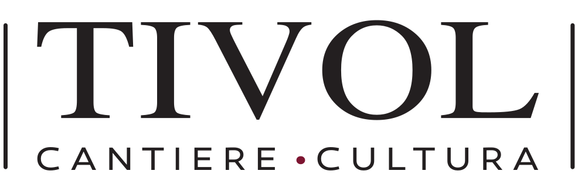
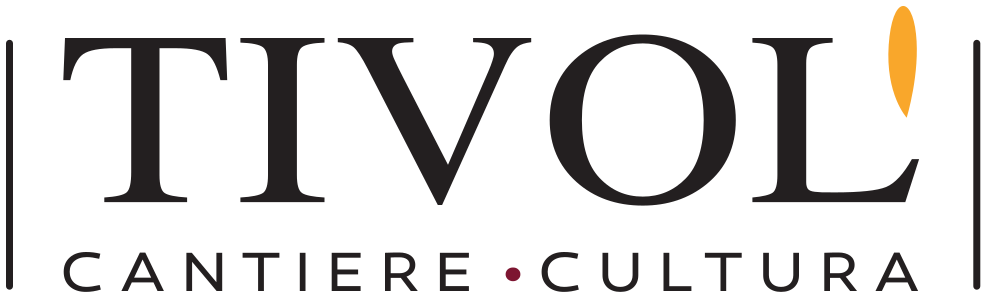

Comitato d’Onore
Nella composizione prevista: il Sindaco della Città di Tivoli, rappresentanti delle istituzioni culturali e territoriali, personalità della cultura e del mondo universitario, rappresentanti del mondo economico e dei partner.

Cerimonia di lancio · 11 dicembre 2026 · Villa d’Este, Tivoli
La memoria che genera futuro
Innovazione, cultura, dialogo, creatività e visione per il futuro. Un Premio che legge l’eredità dell’imperatore Adriano come piattaforma contemporanea e guarda a Tivoli come città del dialogo mediterraneo.


Il Premio
Il Premio nasce dall’idea di leggere Adriano come simbolo di apertura, viaggio, conoscenza, architettura, incontro tra culture e capacità di costruire una visione del futuro.
Concepito dall’Associazione Culturale Tivoli Cantiere Cultura come progetto culturale annuale per la città, il Premio Internazionale Adriano – Città di Tivoli valorizza la relazione tra Tivoli, Villa Adriana e la figura dell’imperatore, trasformandone l’eredità in una piattaforma contemporanea dedicata a cultura, dialogo, creatività, patrimonio e futuro.
Il progetto supera il modello della semplice cerimonia di premiazione: vuole diventare un sistema di attività fatto di candidature e selezione, incontri culturali, programma giovani, forum mediterraneo, comunicazione nazionale, produzione editoriale e un grande evento finale.
Tivoli come città del dialogo mediterraneo.
Il Premio punta ad attrarre progressivamente personalità della cultura, giovani talenti, università, istituzioni, media e turismo culturale, fino a diventare un brand culturale internazionale associato alla città.
Cerimonia di lancio
Nella Sala della Fontana di Villa d’Este, sito UNESCO, l’Associazione Tivoli Cantiere Cultura presenta il Premio: un convegno sul tema «La memoria che genera futuro», l’assegnazione di riconoscimenti a esponenti del mondo della cultura e dell’innovazione e la presentazione ufficiale della prima edizione 2027, con il programma delle attività 2027–2029.
Modera Massimo Alesii, Associazione Tivoli Cantiere Cultura
[DA INSERIRE: relatori della tavola rotonda, dopo la conferma di ciascuno]
Le categorie
Prima ipotesi Le categorie definitive saranno stabilite dal Regolamento del Premio.
A una personalità che abbia contribuito alla diffusione della cultura e della conoscenza.
A un artista contemporaneo capace di interpretare il rapporto tra memoria, patrimonio e contemporaneità.
A un architetto o a un progetto capace di mettere in relazione spazio, uomo, ambiente e comunità.
A una persona, organizzazione o progetto che abbia favorito il dialogo tra culture, popoli e comunità.
A talenti under 35 nei settori della cultura, dell’arte, della ricerca, della tecnologia o del patrimonio.
A una realtà che abbia trasformato cultura, patrimonio, ambiente o turismo in strumento di sviluppo sostenibile.
Il grande riconoscimento alla carriera.
Il riconoscimento più prestigioso, per una personalità di rilevanza nazionale o internazionale che rappresenti in modo esemplare i valori di cultura, dialogo, conoscenza, bellezza e futuro.
Il percorso
Costituzione del progetto, comitati, identità, regolamento, partner e avvio delle azioni di fundraising.
Far conoscere e accreditare il Premio.
Renderlo un appuntamento nazionale stabile.
Portare il Premio nel circuito mediterraneo ed europeo.
Oltre la cerimonia
Sviluppi allo studio Linee di lavoro che potranno affiancare il Premio nelle prossime edizioni.
«Se Adriano vivesse oggi, quale mondo vorrebbe costruire?»
Un programma rivolto agli studenti, aperto a video, fotografia, podcast, racconto, architettura, arte, progetti digitali e intelligenza artificiale applicata alla cultura.
Una rete di università italiane ed europee, centri di ricerca e facoltà di archeologia, architettura, storia dell’arte, filosofia e beni culturali, per fare del Premio un luogo permanente di confronto scientifico e formazione.
«Il Mediterraneo come spazio di cultura, dialogo e futuro»
Un forum annuale, principale leva di internazionalizzazione del Premio, che collega Tivoli all’Italia, all’Europa e ai Paesi mediterranei.
Il Premio deve generare anche economia culturale: l’obiettivo è integrare il calendario dell’evento con l’offerta turistica e culturale della città.
Il Libro del Premio Adriano, pubblicazione annuale con saggi, fotografie, profili dei vincitori e contributi degli studenti, e il podcast Adriano. Le città del mondo: dieci episodi sui luoghi e i temi del viaggio di Adriano, da Roma ad Atene, dall’Egitto alla Siria, dal Mediterraneo a Tivoli.
Governance
Nella composizione prevista: il Sindaco della Città di Tivoli, rappresentanti delle istituzioni culturali e territoriali, personalità della cultura e del mondo universitario, rappresentanti del mondo economico e dei partner.
Da sette a nove membri con competenze in archeologia, storia romana, storia dell’arte, architettura, filosofia, cultura mediterranea, patrimonio, comunicazione culturale e innovazione. Definisce gli indirizzi, valuta le candidature, propone i vincitori e sviluppa le iniziative scientifiche.
Costituito a cura dell’Associazione Tivoli Cantiere Cultura, promuove il Premio ed esamina in via preliminare le candidature, validandole secondo il Regolamento.
Partner e sostenitori
Il Premio cerca istituzioni, fondazioni e imprese che ne condividano i valori. Ogni livello di partnership prevede benefit di visibilità, hospitality, contenuti e relazione istituzionale, coerenti con il regolamento e con la natura culturale del Premio.
Contatti

Associazione Culturale Tivoli Cantiere Cultura
Presidente Antonella Giuliani Eletti
A.G.T. Communications
Dott. Massimo Alesii
[DA INSERIRE: email di contatto]